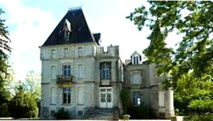
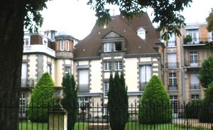
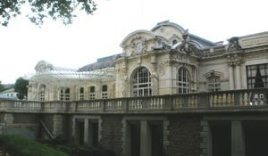
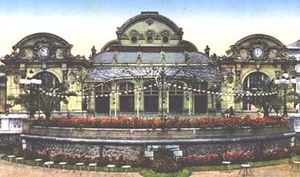
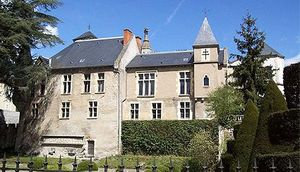
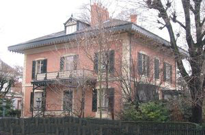
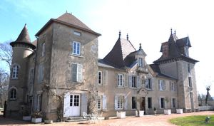
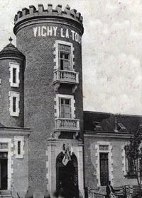
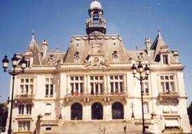

Recensement Jean-Claude Truffet
| Département | 03 — Allier |
| Canton | Vichy |
| Commune | Vichy |
| Type d'édifice | Patrimoine |
| Période d'origine | XVIII |









Pludieurs châteaux à Vichy. Le manoir Sévigné, Castel-Franc et les thermes. VICHY en 1344, le seigneur Jean II cède la châtellenie de Vichy au duc Pierre 1er de Bourbon. En 1374-1384, Louis II de Bourbon acquiert la dernière part du château de Vichy au cur de la ville fortifiée. Vichy est alors rattaché au Bourbonnais. En1410, Louis II édifie des fortifications et fonde le couvent des Célestins.
SEVIGNE, la marquise curiste en 1676 et 1677, qui popularisera la description des prises d'eaux et bains dans ses lettres. Les eaux de Vichy, la guérissant d'une fâcheuse paralysie des mains, lui permettent en effet de retrouver l'usage de sa brillante et précieuse plume. elle y fit construire un pavillon.
Les THERMES, en 1761 et 1762, Adélaïde et Victoire de France, filles de Louis XV viennent une première fois à Vichy, puis reviennent en 1785. L'établissement de bains leur paraît fort incommode avec ses abords boueux et insuffisant pour le grand nombre de curistes. À leur retour à Versailles, elles demandent à leur neveu Louis XVI de faire édifier des thermes plus spacieux et plus agréables, construits en 1787.
CASTEL-FRANC, a pu être la résidence du prévôt de Vichy. Ce manoir a été édifié sur les anciens remparts de la ville à la fin du XVe siècle, il abritait sans doute le bailli en 1523 . La famille Gravier du Monceau, qui est devenue propriétaire des lieux, qui meurt le 29 novembre 1928 à presque 102 ans, il servira de musée à la Compagnie fermière pendant 47 ans, de 1937 à 1984. Il appartient depuis 1997 à la mairie de Vichy. Le CASINO dorigine est construit par Charles Badger, larchitecte du Chalet de la Compagnie en 1857, dont il reste aujourdhui la Galerie Napoléon III) en 1858. En 1799, Letizia Bonaparte, mère de Napoléon, fait une cure en compagnie de son fils Louis. 1900-1901, le Casino est agrandi. Une salle dOpéra, de style art nouveau, est inaugurée en 1901. Lensemble est baptisé Grand Casino et accueille désormais tous les plus grands noms de la scène internationale. 1940-1944 : Vichy, capitale du pays, abrite tous les ministères et les services annexes dans ses hôtels et ses villas.
Suite à l'armistice signé le 22 juin 1940, le gouvernement s'installe à Vichy.
Vichy,1821 la duchesse dAngoulême, fidèle habituée de la station, pose la 1ère pierre du nouvel établissement Thermal qui conserve quelques installations de lancienne Maison du Roy. Peu à peu, le vieux Vichy fait place au Vichy moderne. En 1848, la porte de France, dernier vestige des anciennes fortifications, est démolie. Castel-Franc, ce manoir a été édifié sur les anciens remparts de la ville à la fin du XVe siècle, le bâtiment a conservé des traces du XVe siècle, dans son corps principal à combles élevés et dans une belle porte à pieds droits et linteaux moulurés. À partir du XVIe siècle d'importants travaux, adjonction d'un bâtiment supplémentaire et ouverture de nombreuses baies, dans le style Renaissance. Aujourd'hui l'édifice est constitué d'un double corps de bâtiment de forme rectangulaire à 3 niveaux, flanqué de deux tourelles carrées et d'une petite tourelle ronde en poivrière sur culot mouluré. Au XIXe siècle, le bâtiment a été utilisé comme hôtel de ville de 1801 à 1822. Actuellement, il abrite un musée de la ville. Les thermes et son hippodrome donnent à Vichy un air charmant de French Riviera continentale, d'oasis hédoniste ayant bien digéré la fin de son âge d'or thermal. Vichy, l'architecture antérieure au XIXe siècle se concentre dans la vieille ville avec quelques édifices à façades de pierre ou à pans de bois dans le quartier construit sur le rocher des Célestins. A partir de 1861, avec la naissance de la station thermale moderne, l'architecture se renouvelle et introduit une échelle différente avec des édifices de grande hauteur.
Famille Gravier du Monceau"
Le pavillon de Mme Sévigné, le Castel-Franc, le Guerinets, le Chancelaire, le Casino, les thermes, le châlet de l'empereur et l'hôtel de ville de Vichy.